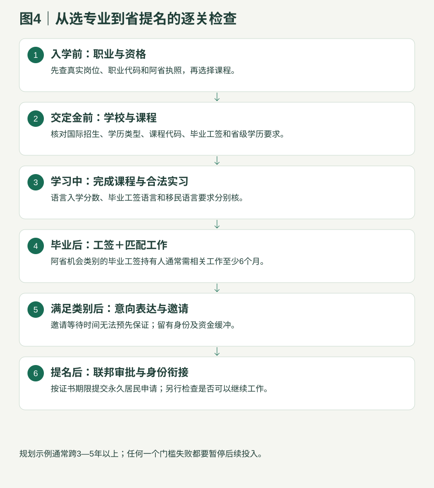

政府政策与留学路径研究
四 境外客户留学规划
把学历、课程、毕业工签、职业资格与真实现金流连起来；不靠短课名称推断可移民。
4.1 留学不是一个移民类别：先过五道门

| 检查点 | 必须回答的问题 | 停止条件 |
|---|---|---|
| 学校 | 是否在指定学习机构（Designated Learning Institution，DLI）名单？公立还是私立？实际授课校园和合作安排是什么？ | 仅整校有编号不能证明具体课程可获毕业工签 |
| 课程 | 学位/文凭/普通证书/文凭后证书分别是什么？学制、教学项目分类（Classification of Instructional Programs，CIP）、全日制与线下要求？ | 普通一年证书不能直接套用机会类别毕业生学历要求 |
| 个人 | 以前是否用过毕业工签？学签申请日期、护照效期、学习方式是否符合？ | 课程合格不代表个人必然合格 |
| 工作 | 毕业能做什么真实职业？须什么证照？工作是否与所学和原有专业相关？ | 没有可实现的上岗方案，先不签长期开销 |
| 省与联邦 | 工作经验、雇主、语言及选择规则都满足吗？工签到期前可否衔接？ | 只能靠未来放宽或未公布项目时，不能卖成确定方案 |
4.2 不同教育背景，选择方式不同
| 国内背景 | 可以研究的课程 | 必须核清 |
|---|---|---|
| 高中/中专 | 两年公立文凭；专业基础、国际学历等值及英语先修 | 中专不自动等于所有课程所需高中数学、化学、生物；先做学校正式评估 |
| 大专 | 相关领域两年文凭或合格文凭后项目 | 需要什么前置学历、是否属于省认可的文凭后证书；不是任何“研文”营销名称都合格 |
| 普通本科 | 与原专业或已有工作有合理联系的进阶课程 | 一年文凭后/学士后项目特别注意机会类别对原境外专业关联的要求；转专业需有真实学习逻辑 |
| 已有专业执照/多年技术经验 | 先比较直接资格认定与招聘；读书可能只是补缺口 | 不要让能通过监管评估的人重复读全套学历；但国内证书不能自动上岗 |
| 已读加拿大院校 | 先看剩余工签/曾用毕业工签/转校和全日制记录 | 毕业工签通常不能重复申请；再读书不保证再得一张新工签 |
4.3 三个语言门槛要分别计算
| 门槛 | 用途与例子 |
|---|---|
| 入学英语 | 学校Academic考试或认可替代；例如诺奎斯特幼教文凭雅思考试（International English Language Testing System，IELTS）总分6.5、单项不低6；执业护士听7.5、说7、读6.5、写7。 |
| 毕业工作许可 | 大学本科/硕士/博士及其他大学课程一般加拿大语言基准（Canadian Language Benchmarks，CLB）/加拿大法语语言基准（Niveaux de compétence linguistique canadiens，NCLC） 7；学院及其他非大学课程一般5，按2024-11-01起适用规则及例外核。 |
| 移民语言 | 机会类别按职业等级5/4，但33102为7；乡村5/4；旅游4；联邦资格可能更高。考试种类与成绩时效也不同。 |
入学雅思学术类不直接代替移民雅思培训类。语言“平均6”不代表每项达到规定基准。
4.4 用现金流决定是否继续，而不是先卖房
以下是单人、第一年、2026-09-24核对的学校估费＋联邦生活资金底线。自2026-09-01适用的单人生活资金为23,448加元，不含学费和往返交通。实际生活、住房和家属费用可以更高。汇率5.2仅作算例，不是实时汇率。学习许可生活资金标准
| 项目 | 首年学校学杂费 | 生活资金底线 | 合计（仍不含交通等） | 人民币算例 |
|---|---|---|---|---|
| 诺奎斯特幼教文凭前2学期 | 19,807.84 | 23,448 | 43,255.84 | 约22.49万元 |
| 南阿尔伯塔理工学院软件文凭 | 25,824.50 | 23,448 | 49,272.50 | 约25.62万元 |
| 奥兹学院农业管理第一年前2学期 | 19,171.74 | 23,448 | 42,619.74 | 约22.16万元 |
如果仍坚持“全年总支出8万元人民币、每月净存1万元人民币”，普通国际留学路线目前不匹配这个预算；应先研究真实雇主招聘和自身可转移技能。不能把尚未获得的兼职工资抵销必须准备的学费与生活资金。
- 完整预算另列：申请费、语言考试、翻译与学历认证、签证与生物识别、体检、保险、书本工具、押金、机票、空窗期。
- 已婚有孩子的客户分别核随行资格、配偶工作许可与孩子教育，不把单人资金表复制为全家预算。
- 每次交不可退定金前保留学校报价、退款政策、项目资格和当日移民规则；先留退出资金。
4.5 家属、实习与学期工作
配偶是否可以工作取决于主申请人所持身份、课程层级/长度、工作类别及剩余许可等现行联邦条件。普通两年学院文凭不能默认给配偶开放工签。毕业转工签后也不能默认所有配偶均符合。国际学生配偶工作许可外国工人的配偶及家属工作许可
课程有实习不代表可以不检查工作授权、体检、弱势群体背景审查、疫苗和雇主条件。学校实习也不保证毕业后全职聘用；移民经验是否可计必须重新按具体类别核。实用护理：录取要求幼儿教育文凭：录取要求阿尔伯塔机会类别资格加拿大经验类移民资格